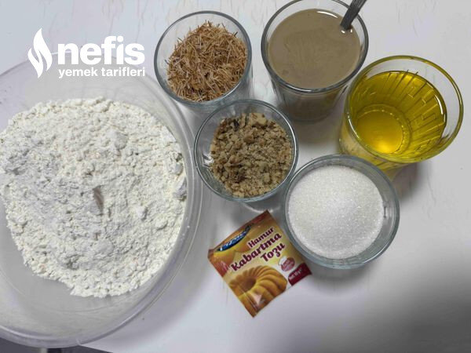

🍽️ 12-14 kişilik⏱️ Hazırlık: 15 dk🔥 Pişirme: 20 dk🏷️ Kurabiye Tarifleri
Malzemeler
- 1 su bardağı sıvı yağ (200mg)
- 1 su bardağı tahin
- 1 su bardağı şeker
- 1 su bardağı ceviz
- 1 su bardağı kavrulmuş kadayıf
- 5 su bardağı un
- 1 pk kabartma tozu
- İstenirse vanilya
Hazırlanışı
- Sıvıyağ, tahin ve şekeri karıştırıyoruz.
- Ceviz ve kavrulmuş kadayıfı ekleyip karıştırmaya devam ediyoruz.
- Kabartma tozu ve vanilyayı ilave ediyoruz unu azar azar kontrollü bir şekilde ilave ediyoruz.
- Hamuru iyice yoğurunca yuvarlıyoruz ( benim 60 adet kurabiyem oldu. İki fırın tepsisinde pişirdim).
- 180 derece ısıtılmış fırında 20-25 dakika kontrollü olarak pişiriyoruz. Sonrasında fırından çıkarıyoruz.
- Soğuyunca servis yapabiliriz nefis kurabiyemizi afiyetle tüketiyoruz afiyet olsun 😊.